![]()
dat <- readxl::read_xlsx("dimarco2020.xlsx")Modello di Regressione Lineare
ADCOM 2025-2026
Ultimo aggiornamento: 05-03-2026
Dataset
Lavoriamo sempre sul dataset Di Marco et al. (2020):
id age gender education status residence period age_cat period_cat
1 1 53 male high_school 2 south 31 51-60 >31
2 2 60 male degree 2 north 27 51-60 21-30
3 3 40 female degree 2 north 13 31-40 11-15
4 4 57 male degree 2 north 20 51-60 16-20
5 5 60 male high_school 2 north 20 51-60 16-20
6 6 46 male degree 2 north 14 41-50 11-15
attachment needs bonds perc_collective_efficacy perc_self_efficacy family
1 3.67 3.33 3.33 3.2 3.11 3.75
2 4.00 3.33 4.00 4.2 3.95 5.00
3 4.00 2.67 3.50 3.8 3.58 4.25
4 4.00 4.00 3.50 3.6 3.74 4.25
5 3.33 3.00 3.33 3.4 3.53 4.00
6 4.00 3.33 3.33 4.2 3.63 5.00
friends organization burnout trauma satisfaction extrinsic intrinsic quest
1 4.00 4.00 1.8 2.11 4.0 2.75 6.00 1.67
2 4.25 3.25 1.4 0.60 3.5 4.75 6.50 1.00
3 4.50 4.50 2.7 2.30 3.6 5.75 5.50 5.00
4 4.50 4.50 1.9 1.80 3.0 4.50 7.00 2.75
5 3.25 3.75 2.6 2.30 2.7 4.25 3.75 4.50
6 5.00 4.75 2.1 1.30 2.6 4.75 7.00 1.25
desiderability
1 3.86
2 4.00
3 4.00
4 3.14
5 3.86
6 3.57
Relazione lineare
Quando abbiamo parlato di correlazione, abbiamo chiarito che due variabili sono correlate se la loro relazione è di tipo lineare. Lineare significa che la relazione può essere descritta da una retta. Ma come disegniamo questa retta?
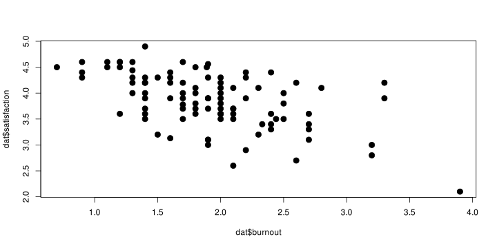
Infinite rette
In uno spazio bidimensionale come questo grafico, possiamo disegnare infinite rette:
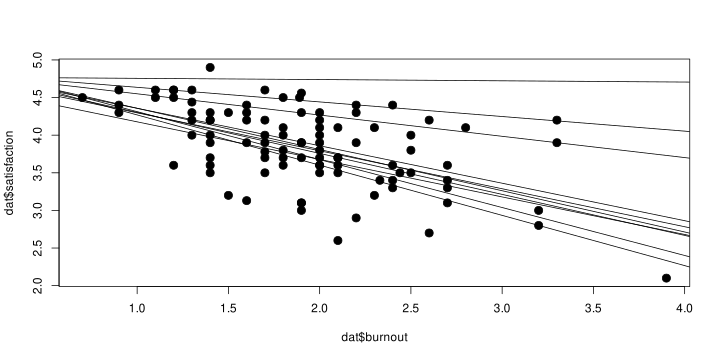
Come scegliere la retta migliore?
Intuitivamente, l’idea è di prendere una retta che approssima meglio la relazione tra le due variabili. Prendiamo come metrica di bontà della retta la distanza dai punti:
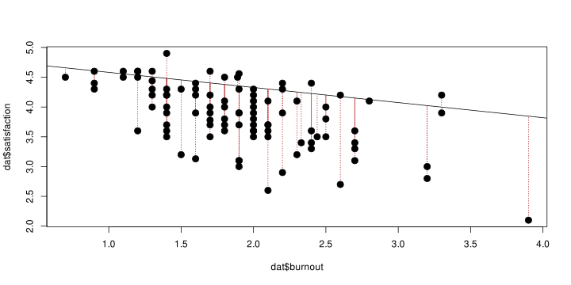
Come scegliere la retta migliore?
Per quantificare in un numero questa metrica, eleviamo al quadrato (togliamo il segno) e facciamo la somma. Calcoliamo quindi la devianza o Sum of Squares (SS):
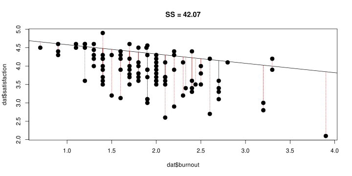
Come scegliere la retta migliore?
Questo valore di per se non ci dice molto ma riassume la somma delle distanze (al quadrato) dalla retta. Facciamolo per diverse rette.
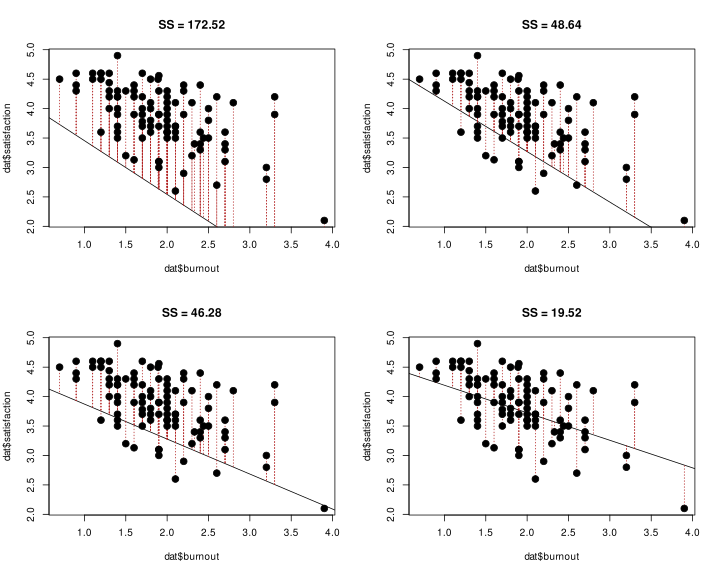
Come scegliere la retta migliore?
Come vediamo, diverse rette producono una diversa SS. Ovviamente, più piccola è la SS e più vicini sono i punti alla retta. Questo è il nostro criterio, dobbiamo trovare la retta che minimizza la distanza dei punti (al quadrato).
Questo metodo, dal punto di vista algoritmico, si chiama metodo dei minimi quadrati perchè appunto permette di trovare quella retta che minimizza la distanza dai punti (al quadrato).
Come disegnare una retta?
Prima di tutto però è necessario capire come una retta viene definita. Abbiamo detto che per un piano bidimensionale passano infinite rette. Allora intanto ancoriamoci ad un punto:
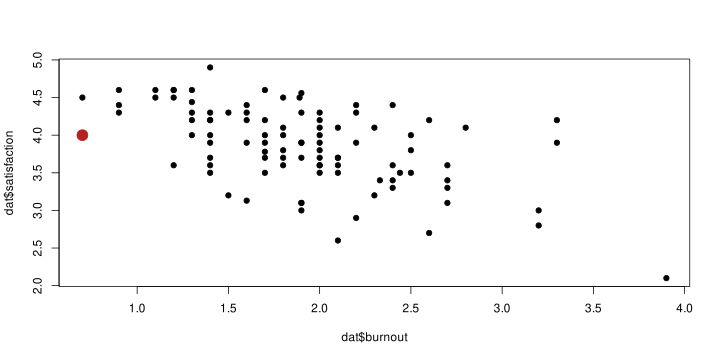
Come disegnare una retta?
Ora immaginiamo che tutte le rette (ancora infinite) passino da quel punto. Di base ci serve solo definire l’inclinazione della retta.
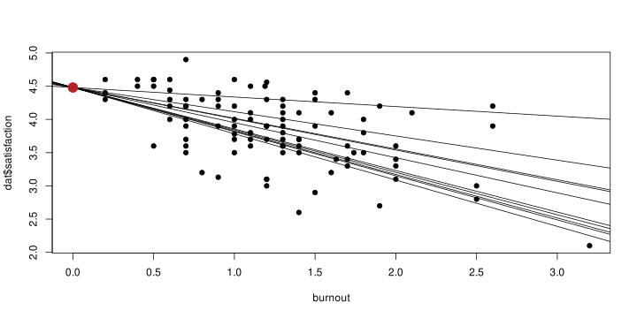
Come disegnare una retta?
Quindi abbiamo bisogno di soli 2 elementi per disegnare una retta. Un punto di ancoraggio e un valore che indichi la pendenza della retta. Questi due valori sono chiamati rispettivamente intercetta e pendenza o coefficiente angolare (slope).
Più formalmente, una retta è definita come:
\[ y_i = \beta_0 + \beta_1 x_i \]
Dove \(\beta_0\) è l’intercetta e \(\beta_1\) è la pendenza. Nella pratica è una funzione con due parametri che dato un input \(x\) fornisce il valore di \(y\). Il valore di \(y\) dipenderà dai valori di \(\beta_0\) e \(\beta_1\).
Intercetta
Nella pratica, l’intercetta sposta verticalmente la retta. Qui la pendenza è la stessa ma sto spostando verticalmente tutta la retta.
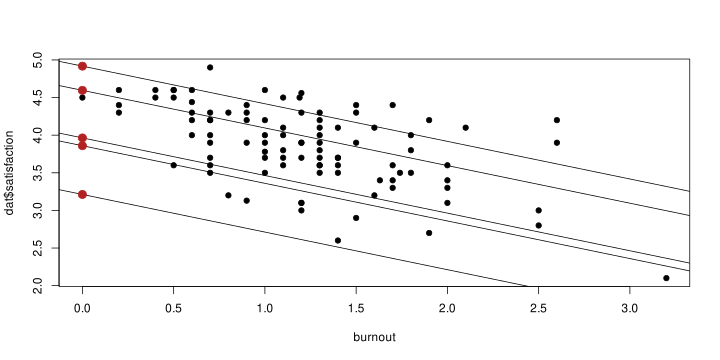
Disegnare la retta, migliore
Quindi come disegniamo la retta migliore? L’idea è quella di trovare un modo per minimizzare la distanza della retta dai punti. In questo modo siamo in grado di stimare i parametri \(\beta_0\) e \(\beta_1\). In particolare, \(\beta_1\):
\[ \beta_1 = \frac{\sum^n_{i = 1} (x - \bar{x})(y - \bar{y})}{\sum^n_{i = 1}{(x - \bar{x})^2}} \]
Invece \(\beta_0\):
\[ \beta_0 = \bar{y} - \beta_1 \bar{x} \]
Disegnare la retta, migliore
Proviamo a fare il calcolo, con le nostre due variabili:
[1] 4.83504
[1] -0.5072002
Anche senza sapere bene come interpretarli, proviamo a disegnare la retta. Per disegnarla riprendiamo la formula generale della retta \(y = \beta_0 + \beta_1 x\).
Disegnare la retta, migliore
Per disegnarla prendiamo una serie di valori \(x\) e su ogni \(x\) applichiamo la formula. Usiamo direttamente i valori di burnout (salvati in x)
Disegnare la retta, migliore
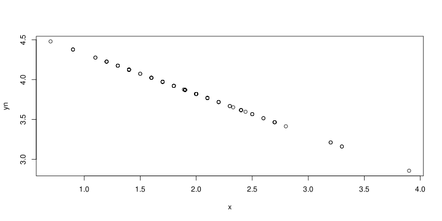
Cosa sono effettivamente \(\beta_0\) e \(\beta_1\)?
Li abbiamo calcolati e visualizzato la retta, ma cosa vogliono dire quei numeri?
- \(\beta_0\) (intercetta) è il valore di \(y\) (outcome) quando \(x = 0\). E’ il punto dove la retta interseca l’asse \(y\)
- \(\beta_1\) (pendenza, slope) è l’incremento di \(y\) per ogni incremento unitario di \(x\)
Mentre \(\beta_0\) è molto semplice, vediamo meglio \(\beta_1\). L’idea è questa, prendiamo un intervallo di valori sulla \(x\), tramite la retta proiettiamo quell’intervallo sulla \(y\). La proiezione su \(y\) è il nostro \(\beta_1\).
Cosa sono effettivamente \(\beta_0\) e \(\beta_1\)?
Più formalmente, prendiamo due punti \(a\) e \(b\) sulla retta \(x\) e calcoliamo la differenza, chiamiamolo \(\Delta_x\). Poi proiettiamo questa differenza su \(y\) e calcoliamo la differenza, chiamiamolo \(\Delta_y\). Il rapporto tra queste due differenze è \(\beta_1\):
\[ \beta_1 = \frac{y_a - y_b}{x_a - x_b} = \frac{\Delta_y}{\Delta_x} \]
Quindi, quando \(x_a - x_b = 1\) allora:
\[ \begin{aligned} y &= \beta_0 + \beta_1 x \\ y^{\star} &= \beta_0 + \beta_1 (x + 1) \\ y^{\star} &= \beta_0 + \beta_1x + \beta_1 \\ y^{\star} &= y + \beta_1 \end{aligned} \]
Cosa sono effettivamente \(\beta_0\) e \(\beta_1\)?
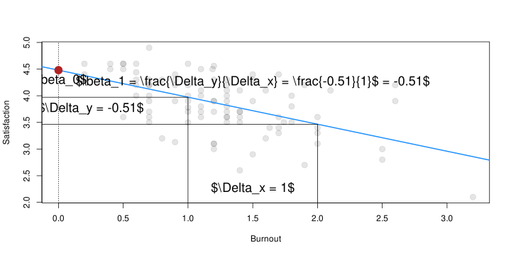
Cosa sono effettivamente \(\beta_0\) e \(\beta_1\)?
Quindi in termini pratici:
- \(\beta_0\) (intercetta) è la stima di
satisfaction(outcome) quando ilburnout(predittore) è zero. - \(\beta_1\) (slope) è l’incremento di
satisfactionper un incremento unitario diburnout. Essendo che \(\beta_1\) è negativo, questo è un decremento.
Ci sono due punti importanti per l’interpretazione dei valore di \(\beta_0\) e \(\beta_1\):
burnoutmesso a zero potrebbe non essere sensato. Immaginate di avere l’età al posto di burnout. \(\beta_0\) sarebbe il valore disatisfactionquando l’età è zero.- L’incremento unitario di
burnoutdeve essere sensato. Se siamo 1 punto in più nella scala di burnout è un valore sensato, allora \(\beta_1\) diventa direttamente intepretabile.
Cosa stiamo effettivamente facendo?
A prescindere dall’aspetto geometrico, cosa significa tracciare una retta e quindi trovare (stimare) i parametri \(\beta_0\) e \(\beta_1\). Per farlo partiamo da un caso particolare ovvero una retta con \(\beta_1 = 0\).
Se riprendiamo le formule: \[ \begin{aligned} \beta_0 &= \bar{y} - \beta_1 \bar{x} \\ \beta_0 &= \bar{y} \end{aligned} \]
Quindi quando \(\beta_1 = 0\), \(\beta_0\) corrisponde alla media di \(y\) (satisfaction nel nostro caso).
Cosa stiamo effettivamente facendo?
Questa retta sta ignorando burnout (\(\beta_1 = 0\)). Possiamo calcolare la SS sommando i segmenti rossi (al quadrato). Chiamiamo questa SS, SSE (errore):
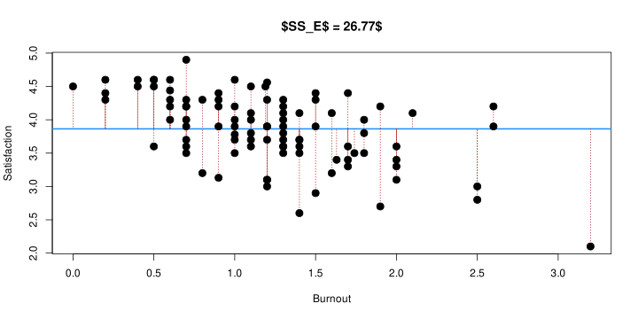
Cosa stiamo effettivamente facendo?
Ora se invece che fissare \(\beta_1 = 0\), usiamo burnout e vediamo se la retta si sposta:
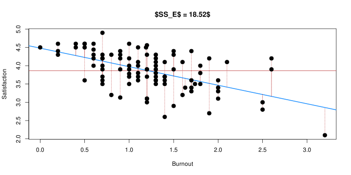
Cosa stiamo effettivamente facendo?
In pratica la distanza tra la retta e i punti è, in media, ridotta. Vediamo per un punto in particolare. Spostare la retta (dalla rossa alla blu) spiega una parte della distanza (varianza).
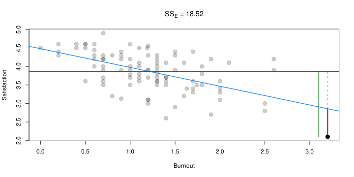
Cosa stiamo effettivamente facendo?
Quindi se chiamiamo \(SS_E\) la somma dei quadrati rimasta dopo aver spostato la retta possiamo chiamare \(SS_T\) (totale, riga verde) quella prima di spostare la retta. Invece chiamiamo \(SS_R\) (regressione) quella che abbiamo tolto (in gergo, spiegato, blu). Possiamo quindi scrivere che:
\[ \textcolor{green}{SS_T} = \textcolor{blue}{SS_R} + \textcolor{red}{SS_E} \]
Quindi i parametri \(\beta_0\) e \(\beta_1\) vengono stimati (tramite il metodo dei minimi quadrati) in modo da minimizzare \(\textcolor{red}{SS_E}\) (o anche per massimizzare \(\textcolor{blue}{SS_R}\)).
\(R^2\)
Inoltre, se \(\textcolor{green}{SS_T}\) è il nostro totale, possiamo esprimere il quale percentuale \(\textcolor{blue}{SS_R}\) spiega. Chiamiamo \(R^2\) questa percentuale. Formalmente:
\[ R^2 = 1 - \frac{\textcolor{red}{SS_E}}{\textcolor{green}{SS_T}} \]
Chiaramente maggiore è la riduzione di \(\textcolor{red}{SS_E}\) (la retta si avvicina molto ai punti) maggiore è \(R^2\).
Intuizione
Un’altro modo di vedere la questione è, partendo dalla retta con \(\beta_1 = 0\) (quella orizzontale). Senza un predittore \(x\) (burnout) la retta che minimizza \(\textcolor{red}{SS_E}\) è fondamentalmente la media.
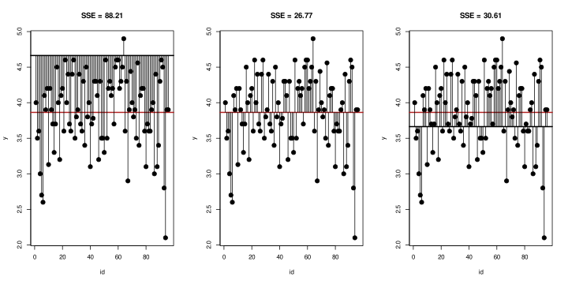
Intuizione
Quando inseriamo un predittore burnout stiamo implicitamente dicendo che la media di \(y\) (satisfaction) si può spostare in funzione di burnout. Quindi la retta che minimizza è sempre la media ma spostata in funzione di burnout:
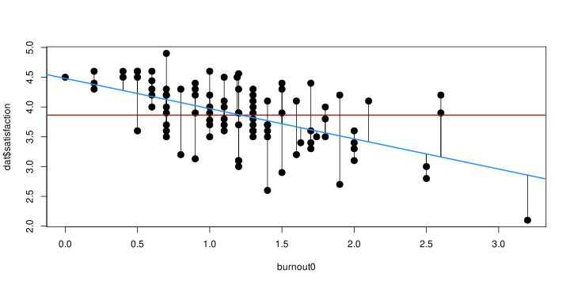
Più formalmente
Ora che abbiamo idea di cosa sta succedendo, defininiamo meglio l’equazione della retta tenendo conto anche dell’errore:
\[ \textcolor{green}{y_i} = \textcolor{blue}{\beta_0 + \beta_1 x_i} + \textcolor{red}{\epsilon_i} \]
Dove \(y_i\) è il valore osservato (di satisfaction). La parte \(\textcolor{blue}{\beta_0 + \beta_1 x_i}\) viene anche chiamata componente sistematica perchè definisce semplicemente la retta una volta stimati \(\beta_0\) e \(\beta_1\), senza errore. Il valore osservato è quindi formato dalla parte sistematica e dall’errore.
Errori
Ora, mentre la parte sistematica \(\textcolor{blue}{\beta_0 + \beta_1 x_i}\) per definizione è senza errore è importante ora capire di più riguardo a \(\textcolor{red}{\epsilon_i}\).
Abbiamo definito nel modulo di inferenza, che quando stimiamo dei parametri c’è sempre una quota d’errore. Inoltre questo errore, idealmente, dovrebbe essere di tipo casuale e non sistematico.
Quindi gli errori \(\textcolor{red}{\epsilon_i}\), attorno alla retta (parte sistematica) dovrebbero distribuirsi in modo casuale. In termini pratici i punti dovrebbero essere certe volte maggiori, altre volte minori della retta. La media degli errori quindi dovrebbe essere zero.
Errori
Più formalmente possiamo dire che:
- La media degli errori dovrebbe essere \(\mu_{\epsilon} = 0\)
- La dispersione degli errori \(\sigma_{\epsilon}\) (la varianza/deviazione standard) è per definizione diversa da zero (c’è sempre una quota d’errore) ma aumenta/diminuisce in base a quanto la retta è vicina ai punti.
Quindi un buon modo di descrivere gli errori (idealmente) potrebbe essere quello di immaginare una distribuzione \(\epsilon \sim \mathcal{D}(\mu = 0, \sigma_{\epsilon})\).
Errori
Una buona distribuzione potrebbe essere proprio quella Normale. Infatti essendo simmetrica le deviazioni dalla media sono per definizione casuali. Deviazioni positive e negative sono bilanciate attorno al centro, ovvero la media.
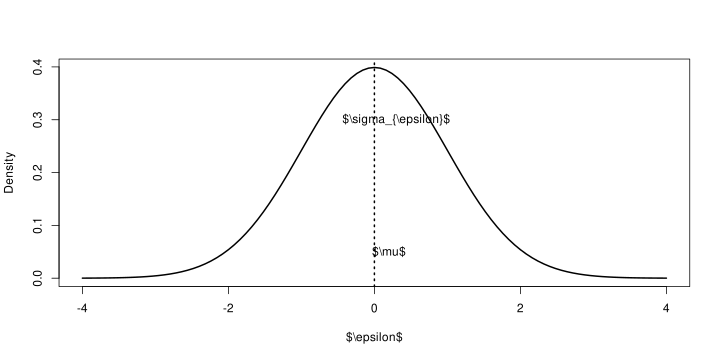
Errori
Quindi possiamo dire che costruiamo una retta che, tramite \(\beta_0\) e \(\beta_1\) minimizza le distanze dai punti. Le distanze residue sono distribuite in modo casuale come una distribuzione normale con \(\mu = 0\) e deviazione standard \(\sigma_{\epsilon}\).
\[ y_i = \beta_0 + \beta_1 x_i + \epsilon_i \]
\[ \epsilon_i \sim \mathcal{N}(0, \sigma_{\epsilon_i}) \]
Definiamo anche \(\hat{y}\) (ovvero \(y\) stimato) come:
\[ \hat{y_i} = \beta_0 + \beta_1 x_i \]
Ovvero il valore che la retta prevede per l’osservazione \(i\).
Errori, graficamente
Stiamo assumendo che per ogni \(\hat{y_i}\), gli errori intorno siano distribuiti come una normale con \(\mu = 0\) e deviazione standard \(\sigma_{\epsilon}\).
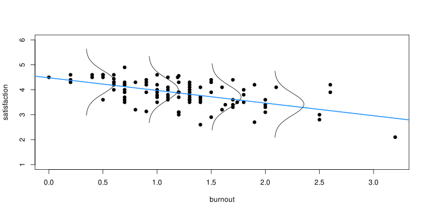
Perche \(\mu = 0\)?
Se provate a sottrarre (centrare) da ogni dato osservato \(y_i\) il dato previsto dalla retta \(\hat{y_i}\) otteniamo questo. La deviazione standard di \(y - \hat{y}\) è una stima di \(\sigma_{\epsilon}\).
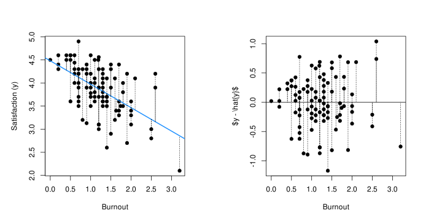
Riassumendo
Abbiamo scomposto ogni dato osservato \(y_i\) come:
\[ \textcolor{green}{y_i} = \textcolor{blue}{\beta_0 + \beta_1 x_i} + \textcolor{red}{\epsilon_i} \]
Se definiamo \(\textcolor{blue}{\hat{y}} = \beta_0 + \beta_1 x_i\) allora:
\[ \textcolor{green}{y_i} = \textcolor{blue}{\hat{y_i}} + \textcolor{red}{\epsilon_i} \]
Inoltre, definiamo come residui:
\[ \textcolor{red}{\epsilon_i} = \textcolor{green}{y_i} - \textcolor{blue}{\hat{y_i}} \]
Infine, quando \(\beta_1 = 0\) abbiamo visto che:
\[ \textcolor{green}{y_i} = \textcolor{blue}{\beta_0} + \textcolor{red}{\epsilon_i} = \textcolor{blue}{\bar{y}} + \textcolor{red}{\epsilon_i} \]
Riassumendo
Inoltre abbiamo definito gli errori come casuali (\(\mu = 0\)) e distribuiti normalmente con deviazione standard \(\sigma_{\epsilon}\). Possiamo quindi definire queste quantità:
\[ \begin{aligned} \textcolor{green}{SS_{T}} &= \textcolor{blue}{SS_{R}} + \textcolor{red}{SS_{E}} \\ \textcolor{green}{SS_{T}} &= \sum^{n}_{i = 1} (y_i - \bar{y})^2 \\ \textcolor{blue}{SS_{R}} &= \sum^{n}_{i = 1} (\hat{y_i} - \bar{y})^2 \\ \textcolor{red}{SS_{E}} &= \sum^{n}_{i = 1} (y_i - \hat{y})^2 \\ R^2 &= 1 - \frac{\textcolor{red}{SS_{E}}}{\textcolor{green}{SS_{T}}} \end{aligned} \]
Riassumendo
Questo che abbiamo definito è un modello lineare. Ogni modello lineare ha una parte sistematica \(\beta_0 + \beta_1 x\) e una parte casuale \(\epsilon\). I parametri da stimare in questo caso sono quindi \(\beta_0\), \(\beta_1\) e \(\sigma_{\epsilon}\).
Quindi, una relazione tra due variabili, si può approssimare con una retta della quale dobbiamo stimare i parametri. Inoltre, i punti possono essere più o meno dispersi attorno alla retta stimata determinando più o meno errore di stima.
Stesso \(\beta_1\), diversa \(\sigma_{\epsilon}\)
Vediamo dei casi dove la pendenza/slope della retta è la stessa ma la deviazione standard dei residui cambia. Dove è più forte la relazione secondo voi?
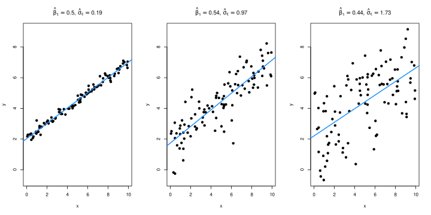
Stesso \(\beta_1\), diversa \(\sigma_{\epsilon}\)
E’ chiaro che la forza della relazione, in termini di pendenza è la stessa ma è chiaramente più intensa la relazione nel primo grafico. Il problema è che la variazione di \(y\) e \(x\) cambia da un grafico all’altro. Forse possiamo standardizzare in qualche modo.
Partiamo standardizzando (trasformare in punti \(z\)) \(x\), burnout nel nostro caso. Ora cambiamo l’unità di misura che diventa una deviazione standard.
Quindi \(\beta_1\) diventa l’incremento di satisfaction quando burnout cresce di una deviazione standard.
Stesso \(\beta_1\), diversa \(\sigma_{\epsilon}\)
Quindi, all’aumentare di una deviazione standard di burnout, satisfaction diminuisce di 0.29.
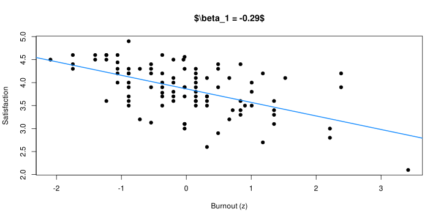
Stesso \(\beta_1\), diversa \(\sigma_{\epsilon}\)
Vediamolo in pratica, vi ricordo la formula:
\[ \beta_1 = \frac{\sum^n_{i = 1} (x - \bar{x})(y - \bar{y})}{\sum^n_{i = 1}{(x - \bar{x})^2}} \]
Stesso \(\beta_1\), diversa \(\sigma_{\epsilon}\)
Ora proviamo a standardizzare anche satisfaction. \(\beta_1\) ci dirà di quante deviazioni standard aumenta satisfaction all’aumentare di una deviazione standard di burnout.
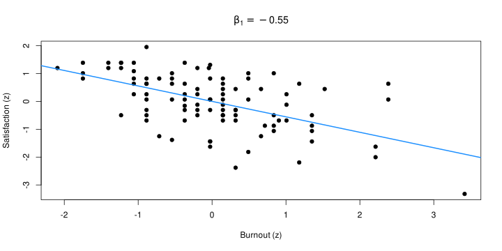
Stesso \(\beta_1\), diversa \(\sigma_{\epsilon}\)
Vediamolo in R:
[1] -0.5549457
Calcoliamo anche la correlazione:
Stesso \(\beta_1\), diversa \(\sigma_{\epsilon}\)
Come vedete, standardizzando le variabili \(\beta_1\) equivale alla correlazione. Esiste infatti una relazione diretta:
\[ \beta_1 = r_{xy} \frac{\sigma_y}{\sigma_x} \]
Trovare la miglior retta che minimizza la SS equivale a calcolare il coefficiente di correlazione.
Chiaramente nei tre grafici con \(\sigma_{\epsilon}\) diversa essendo fissa la parte sistematica \(\beta_0 + \beta_1 x\) allora la varianza di \(y\) è maggiore. Se \(\sigma_y\) aumenta per mantenere lo stesso rapporto (abbiamo fissato \(\beta_1\)) necessariamente \(r_{xy}\) deve scendere. Per questo se calcoliamo la correlazione, questa diminuisce (a parità di \(\beta_1\)) all’aumentare della dispersione attorno alla retta (\(\sigma_{\epsilon}\)).
Riassumendo
- Il metodo dei minimi quadrati ci permette di disegnare, stimando \(\beta_0\) e \(\beta_1\) la miglior retta
- I coefficienti sono rispettivamente la media di \(y\) quando \(x = 0\) e l’incremento di \(y\) per incremento unitario di \(x\)
- Una volta definita la retta, abbiamo una componente sistematica \(\beta_0 + \beta_1x\) e una componente d’errore (casuale) \(\epsilon\)
- Minore è la distanza dei punti dalla retta, minore è la \(SS_E\) e quindi maggiore è \(R^2\)
- La dispersione dei punti attorno alla retta stimata viene catturata dal parametro \(\sigma_{\epsilon}\)
Modello statistico
Quello che abbiamo costruito passo per passo è un modello di regressione lineare. Ma cosa si intende per modello statistico?
Un modello statistico è un modello matematico che descrive, in modo semplificato, la relazione tra variabili. Quello che viene definito processo generativo dei dati (data-generating process).
Ogni modello statistico ha una parte sistematica e una parte d’errore (casuale). L’obiettivo è quindi, tramite un campione, stimare la componente sistematica.
Ogni modello statistico, per definizione, fa delle assunzioni. Queste assunzioni sono necessarie per trarre conclusioni appropriate. Il modello statistico quindi non scopre la realtà ma cerca di capire se i dati (e di conseguenza la popolazione) possono essere approssimati tramite le assunzioni/vincoli del modello stesso.
Modello statistico
In generale, possiamo descrivere un modello statistico come:
\[ y = f(\mathbf{X}) + \epsilon \]
Dove \(y\) è la variabile outcome, \(\mathbf{X}\) sono i predittori (grassetto per indicare uno o più predittori, \(x_1\), \(x_2\), etc.) \(\epsilon\) è l’errore e \(f(\cdot)\) è la parte sistematica del modello.
Nel nostro caso \(\epsilon \sim \mathcal{N}(0, \sigma_{\epsilon})\) e \(f() = \beta_0 + \beta_1 x\) è uno dei modelli possibili e queste sono assunzioni. Assumendo che la relazione sia lineare e che gli errori siano distribuiti normalmente, \(f() = \beta_0 + \beta_1 x\) descrive i dati.
Esempio
Immaginiamo di avere dei dati di questo tipo. E’ chiaro che la relazione non è lineare. Se stimiamo la nostra retta qui otteniamo questo:
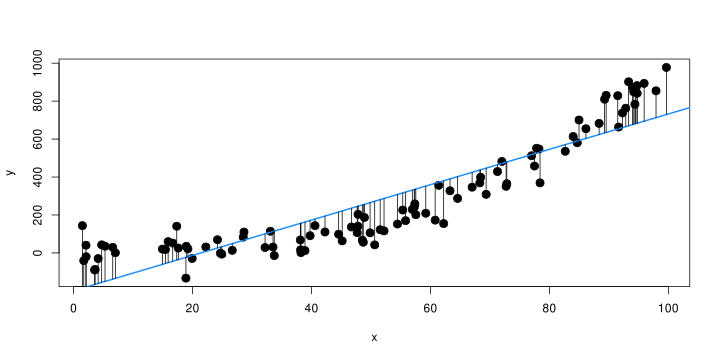
Esempio
Proviamo a rappresentare graficamente \(\epsilon\) (i residui) vs i valori stimati dal modello (retta blu del grafico precedente).
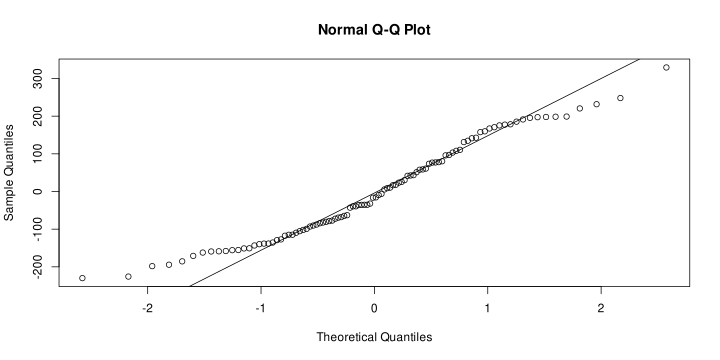
Esempio
E’ chiaro che pur avendo stimato la retta che minimizza la \(SS_E\) questa non sia una buona approssimazione dei dati. Ci serve un modello più complesso:
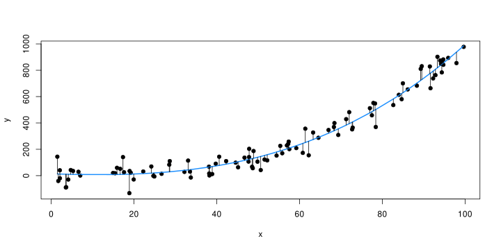
Esempio
Questi sono i residui in questo caso. La retta non era una buona approssimazione.
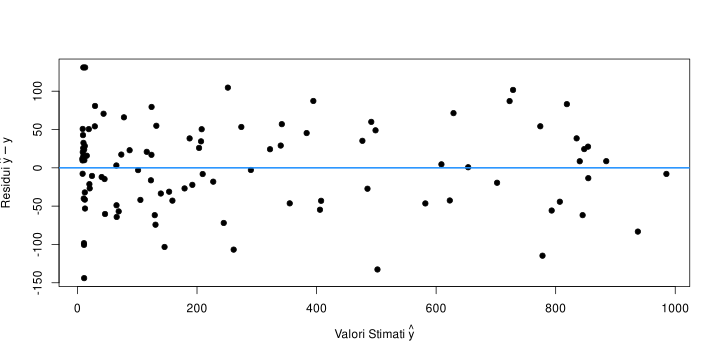
Esempio
Questi due modelli differiscono per \(f()\). Uno è più semplice (la retta) ma evidenti problematiche. L’altro è più complesso (\(\beta_2\) e \(\beta_3\)) da stimare ma approssima meglio.
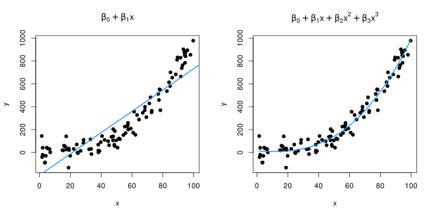
Messaggio finale
All models are wrong, but some are useful.
– George Box
Quindi, i modelli statistici sono semplificazioni matematiche della realtà tramite assunzioni e vincoli.
Il modello lineare ad esempio, assume che una retta sia una buona approssimazione della realtà. Modelli più complessi possono approssimare meglio ma richiedono anche più parametri.
I parametri vengono stimati (con errore) e la qualità della stima è funzione della variabilità del fenomeno e del numero di osservazioni.
Modelli complessi richiedono maggior numero di informazione (soggetti) per essere stimati in modo affidabile.
Modello lineare
Modello lineare [#extra]
Ora ci focalizziamo sul modello lineare con la consapevolezza che \(f()\) possa essere molte cose. Formalmente:
\[ \mathbf{y}_{n\times1} = \mathbf{X}_{n \times p}\boldsymbol{\beta}_{p \times 1} + \boldsymbol{\epsilon}_{n \times 1} \]
Il grassetto (o matrix formulation) è un modo compatto per scrivere anche modelli lunghi. Infatti possiamo avere:
\[ y_i = \beta_0 + \beta_1 x_{1_i} + \beta_2 x_{2_i} + \epsilon_i \]
Modello lineare semplice
Quello che abbiamo usato fino ad ora \(\beta_0 + \beta_1 x\) è definito modello lineare semplice perchè abbiamo un solo predittore \(x\). Ovviamente i modelli possono avere anche molti predittori, in quel caso si chiamano modelli lineari multipli.
Terminologia
Definiamo della terminologia utile:
- con valori osservati \(y_i\) intendiamo la combinazione di componente sistematica \(\mathbf{X}\boldsymbol{\beta}\) ed errore \(\epsilon\).
- con valori predetti \(\mu_i\) intendiamo la sola componente sistematica \(\mathbf{X}\boldsymbol{\beta}\) (senza errore). Sono i valori esattamente sulla retta.
- con residui intendiamo la componente di errore \(\epsilon_i\) ovvero la differenza \(y_i - \mu_i\)
Predittore categoriale
Proviamo ad inserire un predittore categoriale a due livelli sex. L’outcome è l’altezza (per vedere una chiara differenza)1:
Predittore categoriale
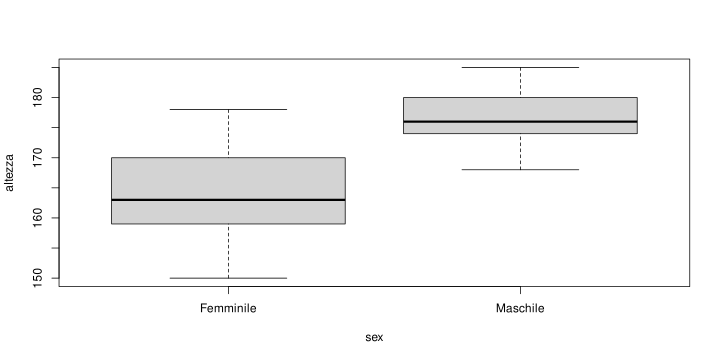
Predittore categoriale
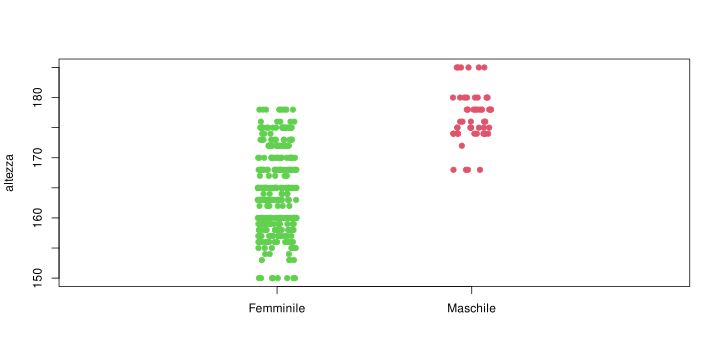
Predittore categoriale
Proviamo a farlo direttamente in R:
Call:
lm(formula = altezza ~ sex, data = adcom)
Residuals:
Min 1Q Median 3Q Max
-14.3517 -4.3517 -0.8077 5.6483 13.6483
Coefficients:
Estimate Std. Error t value Pr(>|t|)
(Intercept) 164.3517 0.3540 464.33 <2e-16 ***
sexMaschile 12.4559 0.9768 12.75 <2e-16 ***
---
Signif. codes: 0 '***' 0.001 '**' 0.01 '*' 0.05 '.' 0.1 ' ' 1
Residual standard error: 6.565 on 394 degrees of freedom
Multiple R-squared: 0.2922, Adjusted R-squared: 0.2904
F-statistic: 162.6 on 1 and 394 DF, p-value: < 2.2e-16
Predittore categoriale
Per capire quello che sta succedendo prima dobbiamo capire cosa succede a sex quando entra in un modello lineare.
L’idea è che nonostante la variabili categoriali siano non numeriche (superficialmente) possiamo rappresentare la stessa informazione usando \(k - 1\) (dove \(k\) è il numero di modalità) variabili numeriche.
In questo caso, sex ha due livelli quindi \(k = 2\) e ci servono \(k - 1 = 1\) variabili numeriche. Di base si usano quelle che si chiamano dummy-variables ovvero variabili con valore 0 o 1.
Dummy variables
La funzione lm crea automaticamente queste variabili quando inseriamo dei predittori categoriali. Per vedere quello che succede possiamo usare la funzione model.matrix():
(Intercept) sexMaschile
1 1 0
2 1 0
3 1 0
4 1 0
5 1 0
6 1 0
7 1 0
8 1 0
9 1 0
10 1 0
11 1 1
12 1 0
13 1 0
14 1 0
15 1 1
16 1 0
17 1 0
18 1 1
19 1 0
20 1 0
21 1 0
22 1 0
23 1 1
24 1 0
25 1 0
26 1 0
27 1 0
28 1 0
29 1 0
30 1 0
31 1 0
32 1 0
33 1 0
34 1 0
35 1 0
36 1 1
37 1 0
38 1 0
39 1 0
40 1 0
41 1 0
42 1 0
43 1 0
44 1 0
45 1 0
46 1 1
47 1 0
48 1 0
49 1 0
50 1 0
51 1 0
52 1 0
53 1 1
54 1 0
55 1 0
56 1 0
57 1 0
58 1 0
59 1 0
60 1 1
61 1 0
62 1 0
63 1 0
64 1 0
65 1 0
66 1 0
67 1 1
68 1 0
69 1 0
70 1 0
71 1 0
72 1 0
73 1 0
74 1 0
75 1 0
76 1 0
77 1 0
78 1 0
79 1 0
80 1 0
81 1 0
82 1 0
83 1 0
84 1 0
85 1 0
86 1 0
87 1 0
88 1 0
89 1 1
90 1 0
91 1 0
92 1 0
93 1 0
94 1 0
95 1 1
96 1 0
97 1 0
98 1 0
99 1 0
100 1 0
101 1 0
102 1 0
103 1 1
104 1 0
105 1 0
106 1 0
107 1 0
108 1 0
109 1 1
110 1 0
111 1 0
112 1 1
113 1 1
114 1 0
115 1 0
116 1 0
117 1 1
118 1 0
119 1 1
120 1 0
121 1 0
122 1 0
123 1 0
124 1 0
125 1 1
126 1 0
127 1 0
128 1 0
129 1 0
130 1 0
131 1 0
132 1 1
133 1 0
134 1 0
135 1 0
136 1 0
137 1 0
138 1 0
139 1 0
140 1 0
141 1 0
142 1 0
143 1 1
144 1 0
145 1 0
146 1 0
147 1 0
148 1 0
149 1 0
150 1 0
151 1 0
152 1 0
153 1 0
154 1 0
155 1 0
156 1 0
157 1 0
158 1 0
159 1 0
160 1 0
161 1 0
162 1 0
163 1 0
164 1 0
165 1 0
166 1 0
167 1 0
168 1 0
169 1 0
170 1 0
171 1 0
172 1 0
173 1 0
174 1 0
175 1 0
176 1 0
177 1 0
178 1 0
179 1 0
180 1 1
181 1 0
182 1 1
183 1 0
184 1 0
185 1 0
186 1 0
187 1 0
188 1 1
189 1 0
190 1 0
191 1 0
192 1 0
193 1 0
194 1 0
195 1 0
196 1 0
197 1 0
198 1 0
199 1 0
200 1 1
201 1 0
202 1 0
203 1 1
204 1 0
205 1 0
206 1 0
207 1 0
208 1 0
209 1 0
210 1 0
211 1 0
212 1 0
213 1 0
214 1 0
215 1 0
216 1 0
217 1 0
218 1 0
219 1 0
220 1 0
221 1 0
222 1 0
223 1 0
224 1 0
225 1 0
226 1 0
227 1 0
228 1 0
229 1 0
230 1 0
231 1 0
232 1 0
233 1 0
234 1 0
235 1 0
236 1 0
237 1 0
238 1 0
239 1 0
240 1 1
241 1 1
242 1 0
243 1 0
244 1 0
245 1 0
246 1 0
247 1 0
248 1 0
249 1 0
250 1 0
251 1 0
252 1 0
253 1 0
254 1 1
255 1 0
256 1 1
257 1 0
258 1 0
259 1 0
260 1 0
261 1 0
262 1 0
263 1 0
264 1 0
265 1 0
266 1 0
267 1 0
268 1 1
269 1 0
270 1 0
271 1 1
272 1 0
273 1 0
274 1 0
275 1 0
276 1 0
277 1 0
278 1 0
279 1 0
280 1 0
281 1 0
282 1 0
283 1 1
284 1 0
285 1 0
286 1 1
287 1 0
288 1 0
289 1 0
290 1 0
291 1 0
292 1 0
293 1 0
294 1 0
295 1 0
296 1 0
297 1 0
298 1 0
299 1 0
300 1 0
301 1 0
302 1 1
303 1 0
304 1 0
305 1 1
306 1 0
307 1 0
308 1 0
309 1 0
310 1 1
311 1 0
312 1 0
313 1 0
314 1 0
315 1 1
316 1 0
317 1 0
318 1 1
319 1 0
320 1 0
321 1 0
322 1 0
323 1 0
324 1 0
325 1 0
326 1 1
327 1 0
328 1 0
329 1 0
330 1 0
331 1 1
332 1 0
333 1 1
334 1 0
335 1 1
336 1 0
337 1 1
338 1 0
339 1 0
340 1 0
341 1 0
342 1 0
343 1 1
344 1 0
345 1 1
346 1 0
347 1 0
348 1 1
349 1 0
350 1 0
351 1 0
352 1 0
353 1 0
354 1 0
355 1 0
356 1 0
357 1 0
358 1 0
359 1 1
360 1 0
361 1 0
362 1 0
363 1 0
364 1 0
365 1 0
366 1 0
367 1 0
368 1 0
369 1 0
370 1 0
371 1 0
372 1 1
373 1 0
374 1 0
375 1 0
376 1 0
377 1 1
378 1 0
379 1 0
380 1 0
381 1 0
382 1 0
383 1 0
384 1 0
385 1 1
386 1 0
387 1 0
388 1 0
389 1 0
390 1 0
391 1 0
392 1 1
393 1 0
394 1 0
395 1 0
396 1 1
attr(,"assign")
[1] 0 1
attr(,"contrasts")
attr(,"contrasts")$sex
[1] "contr.treatment"
Dummy variables
Possiamo lasciare stare l’intercetta per il momento, la colonna sexMaschile è la versione dummy della variabile categoriale sex. Possiamo anche crearla manualmente:
[1] "Femminile" "Femminile" "Femminile" "Femminile" "Femminile" "Femminile"
[7] "Femminile" "Femminile" "Femminile" "Femminile" "Maschile" "Femminile"
[13] "Femminile" "Femminile" "Maschile"
[1] 0 0 0 0 0 0 0 0 0 0 1 0 0 0 1
Non è necessario farlo manualmente, ma è importante capire cosa fa il software. A prescindere da R, tendenzialmente tutti i software lavorano così.
Dummy variables
Quindi quando inseriamo una variabile categoriale con \(k\) livelli, vengono create \(k - 1\) variabili dummy. Sono variabili numeriche a tutti gli effetti, quindi i coefficienti si intepretano come tali. Riprendiamo (concetriamoci sui parametri):
Dummy variables
(Intercept)è il valore di \(y\) (altezza) quando \(x = 0\) (sex).sex= 0 per la variabile dummy è il sesso femminile. Quindi è l’altezza media delle femmine.sexMaschile(\(\beta_1\)) è l’incremento dialtezzaper incremento unitario insex.
Essendo che sono variabili dummy, dire aumento unitario equivale a dire mi sposto da una categoria all’altra. Quindi \(\beta_1\) è la differenza di altezza tra maschi e femmine.
T-test
In altri termini, abbiamo fatto sostanzialmente un t-test. Infatti possiamo confrontare i risultati. Notate i valori della statistica \(t\) e \(p\) value:
Two Sample t-test
data: altezza by sex
t = -12.752, df = 394, p-value < 2.2e-16
alternative hypothesis: true difference in means between group Femminile and group Maschile is not equal to 0
95 percent confidence interval:
-14.37629 -10.53561
sample estimates:
mean in group Femminile mean in group Maschile
164.3517 176.8077
Scriviamo l’equazione
Con i modelli lineari, scrivere l’equazione (componente sistematica) è molto importante e fa capire molte cose.
\[ \hat{\mbox{altezza}} = \beta_0 + \beta_1 \mbox{sex} \quad \mbox{sex} = \{0, 1\} \] \[ \begin{aligned} \hat{\mbox{altezza}} &= \beta_0 + \beta_1 \times 1 \quad \mbox{sex} = 1 \\ \hat{\mbox{altezza}} &= \beta_0 + \beta_1 \times 0 \quad \mbox{sex} = 0 \\ &= \beta_0 \end{aligned} \]
Graficamente
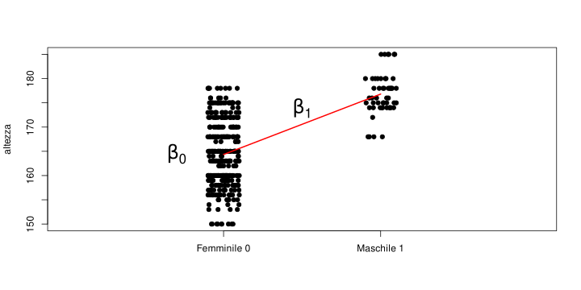
Inferenza
Da dove vengono quelle statistiche test \(t\) e p value? Vengono calcolati esattamente come già sappiamo. Dobbiamo definire \(H_0\) e \(H_1\) anche nel caso di modelli di regressione lineare dove:
\[ H_0: \beta_j = 0 \]
\[ H_1: \beta_j \neq 0 \]
Dove \(\beta_j\) è uno dei possibili coefficienti di regressione che siamo interessati a valutare. Ovviamente possiamo anche fare dei test monodirezionali.
Inferenza
Ogni coefficiente di regressione ha la sua stima campionaria \(\hat \beta_j\) e quindi ha anche il suo errore standard \(\text{SE}_{\hat \beta_j}\) che indica quanto è precisa la stima del coefficiente di regressione. Quindi possiamo definire una statistica test standardizzata come:
\[ t = \frac{\hat \beta_j}{\text{SE}_{\beta_j}} \]
Questa statistica test sotto \(H_0\) si distribuisce come una \(t\) di Student con \(\nu = n - p\) gradi di libertà dove \(p\) è il numero totale di coefficienti stimati dal modello. Nel caso dell’altezza, \(p = 2\) (\(\beta_0\) e \(\beta_1\)) quindi \(\nu = n - p = 396 - 2 = 394\).
\(R^2\) aggiustato
Nella tabella di regressione vedete anche il valore di \(R^2\) aggiustato.
\[ R^2_{\text{adj}} = 1 - \frac{(1 - R^2)(n - 1)}{n - p} \]
Dove \(n\) è la numerosità campionaria e \(p\) il numero di coefficienti stimati. Sostanzialmente questa formula riduce il valore di \(R^2\) in funzione del numero dei parametri stimati. A parità di \(R^2\) (non aggiustato), quello aggiustato sarà minore se sono serviti più parametri per arrivare alla stessa varianza spiegata.
Assunzioni
Il modello lineare funziona correttamente nel momento in cui alcune assunzioni sono rispettate:
- Linearità. Si assume che la relazione tra \(x\) e \(y\) sia lineare, sia nella regressione semplice sia in quella multipla.
- Indipendenza. I residui devono essere indipendenti tra loro. In sostanza, non devono esserci strutture sistematiche o fattori non misurati che li rendano dipendenti.
- Normalità. Si assume che i residui siano distribuiti normalmente. Non è necessario che \(x\) e \(y\) siano normali, purché lo siano i residui.
- Omoschedasticità. La varianza dei residui deve essere costante. In pratica, la dispersione dei residui deve rimanere simile per tutti i valori predetti \(\mu\) e, idealmente, per tutti i valori dei predittori \(x\).
Linearità
Questa assunzione riguarda la componente sistematica del modello. In regressione lineare, “lineare” significa lineare nei parametri.
Ad esempio, questi sono modelli lineari:
\[ y = \beta_0 + \beta_1 x \] \[ y = \beta_0 + \beta_1 x + \beta_2 x^2 \]
è un modello lineare. Pur non rappresentando una retta, resta lineare perché i coefficienti \(\beta_0\), \(\beta_1\) e \(\beta_2\) compaiono linearmente.
\[ y = \beta_0 + x^{\beta_1} \]
non è un modello lineare, perché il parametro \(\beta_1\) compare come esponente e quindi non entra in forma lineare.
Indipendenza
Questa assunzione è by-design nel senso che dipende dal tipo di dato. In termini pratici significa che le righe del nostro dataset devono essere indipendenti. Indipendenza in questo caso significa, sostanzialmente, che ogni riga appartiene ad un soggetto diverso. Ad esempio:
- 100 soggetti dove misuro \(p\) variabili (questionari, socio-anagrafiche, etc.) -> dataset con righe indipendenti
- 100 soggetti misurati prima/dopo un trattamento. Il valore pre e post sono correlati (dipendenti) perchè sono appartenenti allo stesso soggetto
In questo secondo caso è necessario usare dei modelli che tengano conto della dipendenza, come quelli multilivello. In tutti gli altri casi, il modello lineare che stiamo usando è adeguato.
Normalità dei residui
La normalità dei residui, come dice il nome significa che i residui (e non la variabile dipendente) devono essere distribuiti normalmente. In linea teorica, i residui devono avere media \(\mu = 0\) e \(\sigma = \sigma_{\epsilon}\) (quella stimata dal modello). Nella pratica devono avere una forma normale e non contenere pattern e/o deviazioni dalla media \(\mu = 0\).
Questa assunzione si vede principalmente a livello grafico e guardando statistiche descrittive dei residui. Alcuni propongono di usare dei test per valutare la normalità (tipo Shapiro-Wilk). Tuttavia il metodo migliore è quello grafico.
Normalità dei residui
La cosa più semplice da fare è rappresentare graficamente i residui con un istogramma e/o un QQ-plot.
Riprendiamo un modello lineare semplice:
Call:
lm(formula = satisfaction ~ burnout, data = dat)
Residuals:
Min 1Q Median 3Q Max
-1.16992 -0.22280 0.02072 0.27720 1.03872
Coefficients:
Estimate Std. Error t value Pr(>|t|)
(Intercept) 4.83504 0.15688 30.821 < 2e-16 ***
burnout -0.50720 0.07842 -6.468 4.43e-09 ***
---
Signif. codes: 0 '***' 0.001 '**' 0.01 '*' 0.05 '.' 0.1 ' ' 1
Residual standard error: 0.4439 on 94 degrees of freedom
Multiple R-squared: 0.308, Adjusted R-squared: 0.3006
F-statistic: 41.83 on 1 and 94 DF, p-value: 4.43e-09
Normalità dei residui
Come vedete su R c’è una sezione specifica riguardo i residui che vi fornisce alcune statistiche descrittive in particolare minimo, primo quartile, mediana, terzo quartile e massimo. Già qui possiamo farci un’idea del pattern:
- i residui devono essere simmetrici attorno a zero, vediamo che la mediana è molto vicina a zero
- se i residui sono normali, 1 e 3 quartile dovrebbero essere lo stesso valore (o molto simile) semplicemente con segno diverso
- lo stesso vale anche per massimo e minimo ma questi sono estremamente sensibili a valori anomali
Normalità dei residui
Vediamo con un’istogramma. Le linee rosse sono i quantili che sono riportati nel summary del modello:
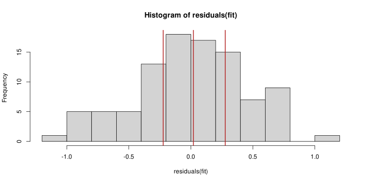
Normalità dei residui
Un modo però ancora più efficace è quello del QQ plot perchè ci fa vedere direttamente delle deviazioni dalla normalità:
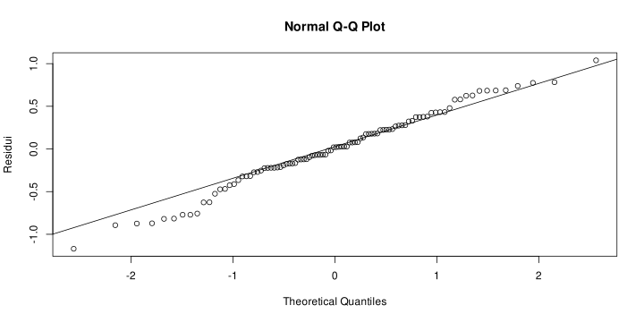
Normalità dei residui
In questo caso sulle code abbiamo della deviazione dalla normalità ma in generale possiamo dire che il modello è abbastanza adeguato. Deviazioni importanti dalla normalità sicuramente devono essere evidenziate. Solitamente la principale motivazione di non normalità dei residui è legata al fatto che il modello lineare non è il modello adeguato per quella tipologia di dato. In particolare, la variabile outcome può avere bisogno di un’altro modello.
Omoschedasticità dei residui
Oltre alla normalità, il modello lineare richiede che la varianza dei residui \(\sigma_{\epsilon}\) sia costante per ogni valore di \(\mu\). In termini pratici, la dispersione attorno alla retta di regressione stimata deve essere costante.
Ovviamente questo è legato al fatto che stimando un solo parametro di varianza dei residui, questo per essere informativo non deve variare in funzione di \(x\), altrimenti \(\sigma_{\epsilon}\) diventa meno informativo.
Anche questo criterio è facilmente verificabile a livello grafico e quindi consiglio di evitare i test statistici per questo tipo di cose.
Omoschedasticità dei residui
L’Omoschedasticità dei residui si intende condizionata rispetto al valore stimato dal modello. In altri termini, per ogni valore stimato ci si aspetta che la varianza dei residui (attorno al valore stimato) sia normale (assunzione precedente) con varianza costante.
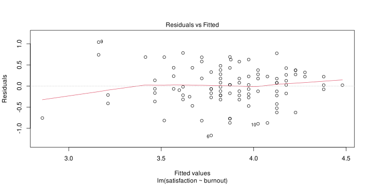
Omoschedasticità dei residui
In questo grafico le cose da osservare sono:
- se la linea rossa (una sorta di stima non lineare della relazione) è orizzontale. In questo caso significa che non c’è un pattern nella relazione. Il caso ideale è la linea rossa il più simile possibile a quella tratteggiata orizzontale.
- se la dispersione dei punti attorno alla linea rossa (idealmente quella tratteggiata) è costante. Ovvero non ci sono incrementi o decrementi di variabilità.
Nel grafico precedente la dispersione sembra abbastanza costante a parte agli estremi dove aumenta a sinistra e si riduce a destra. Attenzione che con poche osservazioni è difficile vedere chiaramente eventuali problemi.
Un caso ideale (positivo e negativo)
Vi mostro dei dati simulati per vedere dei casi prototipici di deviazioni rispetto a questi assunti. Questi sono dei dati simulati seguendo esattamente gli assunti. Relazione lineare tra x e y.

Un caso ideale (positivo e negativo)
Fittiamo il modello lineare e vediamo i residui:
Call:
lm(formula = y ~ x, data = dat)
Residuals:
Min 1Q Median 3Q Max
-35.485 -6.685 0.095 6.589 37.085
Coefficients:
Estimate Std. Error t value Pr(>|t|)
(Intercept) 29.766543 0.200295 148.6 <2e-16 ***
x 0.304761 0.003443 88.5 <2e-16 ***
---
Signif. codes: 0 '***' 0.001 '**' 0.01 '*' 0.05 '.' 0.1 ' ' 1
Residual standard error: 9.958 on 9998 degrees of freedom
Multiple R-squared: 0.4393, Adjusted R-squared: 0.4392
F-statistic: 7833 on 1 and 9998 DF, p-value: < 2.2e-16
Un caso ideale (positivo e negativo)
A prescindere da coefficienti ed intepretazione, possiamo vedere che i residui sono chiaramente normali guardando solo i quantili riportati. Vediamo comunque un grafico:

Un caso ideale (positivo e negativo)
Vediamo adesso i valori predetti vs i residui per vedere pattern nella relazione e la dispersione attorno ai valori predetti:

Un caso ideale (positivo e negativo)
Vediamo adesso un caso dove gli assunti sono chiaramente violati:

Un caso ideale (positivo e negativo)
Anche qui facciamo il modello lineare:
Call:
lm(formula = y ~ x, data = dat)
Residuals:
Min 1Q Median 3Q Max
-51.305 -9.219 -0.065 8.825 74.407
Coefficients:
Estimate Std. Error t value Pr(>|t|)
(Intercept) 13.297876 0.281222 47.29 <2e-16 ***
x 1.300242 0.004866 267.22 <2e-16 ***
---
Signif. codes: 0 '***' 0.001 '**' 0.01 '*' 0.05 '.' 0.1 ' ' 1
Residual standard error: 14.01 on 9998 degrees of freedom
Multiple R-squared: 0.8772, Adjusted R-squared: 0.8772
F-statistic: 7.141e+04 on 1 and 9998 DF, p-value: < 2.2e-16
Un caso ideale (positivo e negativo)
A parte la forma chiaramente non lineare e la dispersione non costante, i quantili dei residui non sono estremamente problematici, vediamo il grafico. E’ presente un’asimmetria positiva essendoci dei valori estremi grandi che non sono bilanciati attorno allo zero.

Un caso ideale (positivo e negativo)
Vediamo ora i valori predetti rispetto ai residui:

Un caso ideale (positivo e negativo)
Nel grafico vediamo chiaramente:
- un pattern che rimane (linea rossa non orizzontale) quindi il valore atteso (media) dei residui calcolata per ogni valore predetto dal modello non è sempre zero
- la dispersione dei punti attorno ai valori predetti dal modello non è costante ed anzi ha un pattern crescente in questo caso
Qualche precisazione
Un’aspetto fondamentale rispetto alla verifica delle assunzioni, in particolare normalità e omoschedasticità riguarda il fatto che le assunzioni devono essere verificate sui residui e non sull’outcome \(y\) “grezzo”.
In altri termini, la variabile \(y\) potrebbe sembrare non-normale ma una volta ripulita dalla componente sistematica, quindi calcolando i residui, questi risultano normali e con varianza costante.
Regressione Multipla
Regressione Multipla
Tutto quello che abbiamo visto fino ad ora era riferito al modello lineare semplice ovvero un predittore e un outcome.
Abbiamo visto che nel caso di un predittore categoriale a 2 livelli questo si riduca ad un t-test mentre nel caso di un predittore numerico questo diventi sostanzialmente una correlazione.
Il vero vantaggio di un modello lineare però è quello di includere più di un predittore (categoriale o numerico) all’interno dello stesso modello.
Regressione Multipla
La formula rimane la stessa, semplicemente si allunga:
\[ y_i = \beta_0 + \beta_1 x_{1_i} + \beta_2 x_{2_i} + \dots \beta_p x_{p_i} + \epsilon_i \]
Quindi possiamo aggiungere in modo additivo predittori \(x_p\). Come vedete la struttura è sempre la stessa, abbiamo una componente sistematica che rispetto a prima contiene più componenti \(\beta_0 + \beta_1 x_{1_i} + \dots\) e la componente casuale (residua) \(\epsilon_i\) che rappresenta sempre la parte non spiegata del modello.
Regressione Multipla
Tutto quello che abbiamo visto nel caso semplice, vale anche nel caso multiplo. La difficoltà però riguarda principalmente la visualizzazione. La relazione tra \(y\) e \(x\) è facilmente rappresentabile in un piano (2 dimensioni). Quella tra \(y\) e \(x_1\) e \(x_2\) richiede un cubo (3 dimensioni). Dopo le 3 dimensioni non è più possibile rappresentare graficamente i concetti.
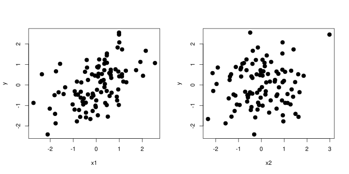
Regressione Multipla
Quelle del grafico precendente sono due relazioni bivariate (due modelli lineari semplici). Mettiamo però tutto assieme. Ora il modello non stima la retta ma il piano che minimizza le distanze.
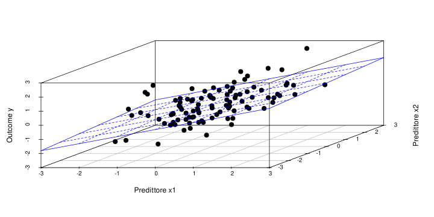
Regressione Multipla
La logica è la stessa, le distanze (residui) ora sono su 3 dimensioni e non più su due:
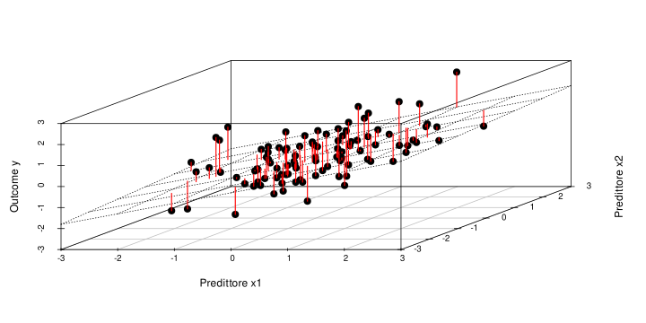
Regressione Multipla
Vediamo come cambia l’intepretazione dei parametri. Proviamo a stimare questo modello attachment ~ period dove attachment indica il senso di appartenenza e legame affettivo con l’organizzazione e period indica il numero di anni di “anzianità” di volontariato.
Coefficients:
Estimate Std. Error t value Pr(>|t|)
(Intercept) 3.511591 0.073240 47.946 < 2e-16 ***
period 0.010856 0.003234 3.357 0.00114 **
---
Signif. codes: 0 '***' 0.001 '**' 0.01 '*' 0.05 '.' 0.1 ' ' 1Vediamo che all’aumentare di un anno di “anzianità” aumenta l’attaccamento di 0.01 con un p value significativo.
Regressione Multipla
Quindi possiamo concludere che all’aumentare dell’esperienza di volontariato, maggiore sarà il mio attaccamento all’associazione che frequento attualmente. Tuttavia mi viene il dubbio che anche l’età anagrafica possa essere rilevante. Magari persone con età maggiore hanno sistematicamente meno o più attaccamento. Includo anche l’età nel modello:
Coefficients:
Estimate Std. Error t value Pr(>|t|)
(Intercept) 3.087684 0.182768 16.894 <2e-16 ***
period 0.002521 0.004566 0.552 0.5822
age 0.012052 0.004785 2.519 0.0135 *
---
Signif. codes: 0 '***' 0.001 '**' 0.01 '*' 0.05 '.' 0.1 ' ' 1Regressione Multipla
Vediamo che il coefficiente di period è drasticamente diminuito e il p value non è più inferiore ad \(\alpha\). Inoltre, age è associata ad un coefficiente di 0.01 con un p-value significativo. Cosa è successo?
Intanto, i coefficienti si intepretano sempre allo stesso modo del caso semplice, ma con una piccola aggiunta:
period(0.002) è l’incremento diattachmentquandoperiodaumenta di 1, controllando perageage(0.012) è l’incremento diattachmentquandoageaumenta di 1, controllando perperiod
L’aggiunta riguarda quindi il controllando per. Cosa stiamo facendo quindi?
Regressione Multipla
Ragionando in ottica bivariata (con regressione semplice o correlazione) noi vediamo la relazione tra attachment ~ period e attachment ~ age.
Quello che però vogliamo realmente vedere, in ottica multivariata è il contributo unico di period e di age nello spiegare la varianza di attachment.
In termini pratici questo significa prendere soggetti con la stessa age ma che variano in period (e viceversa) e vedere l’effetto su attachment.
Se tenendo fisso period, age è comunque legato ad attachment significa che age sta spiegando qualcosa che period non spiegava.
Regressione Multipla
Graficamente questo è quello che stiamo facendo, individuare la varianza spiegata unicamente da quella variabile.
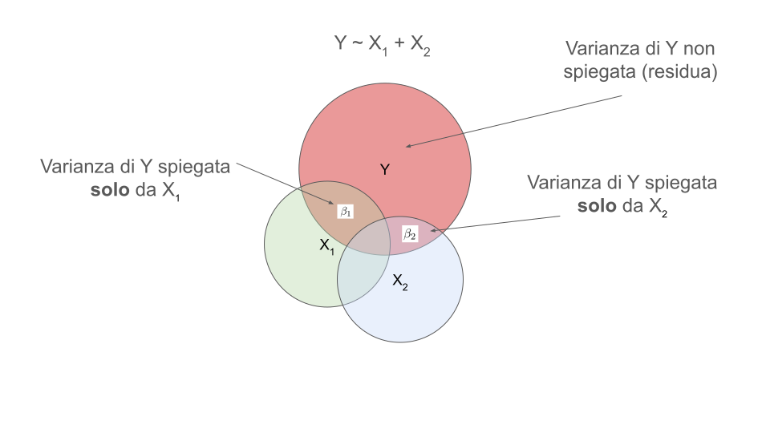
Regressione Multipla
Quello che emerge nel nostro caso è simile al third-variable problem. age è legato sia a attachment che a period mentre period e attachment sono poco o nulla legati. Se ometto age allora period e attachment sembrano apparentemente legati.
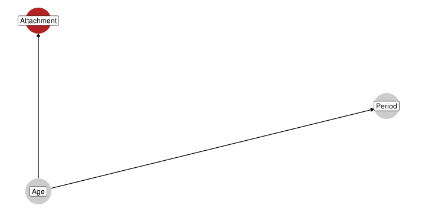
Regressione Multipla
Quindi, inserire age come controllo ci permette di capire che non è tanto l’anzianità di volontariato ad aumentare l’attaccamento quanto l’età.
Due persone con la stessa età ma con anzianità diversa tendono tendono ad avere punteggi simili di attachment. Due persone con età diversa ma stessa anzianità, tendono ad avere invece maggiore attachment all’aumentare dell’età.
Regressione Multipla
Vediamolo in 3D (di solito non si fa ma in questo caso utile).
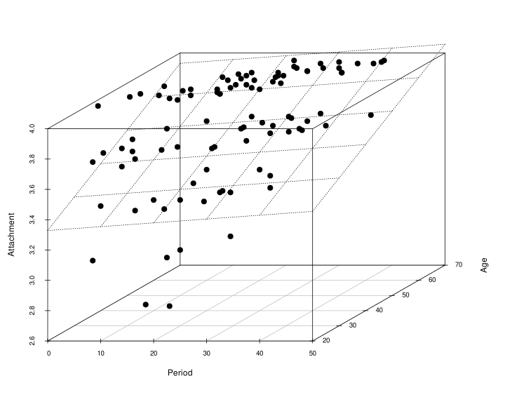
Regressione Multipla
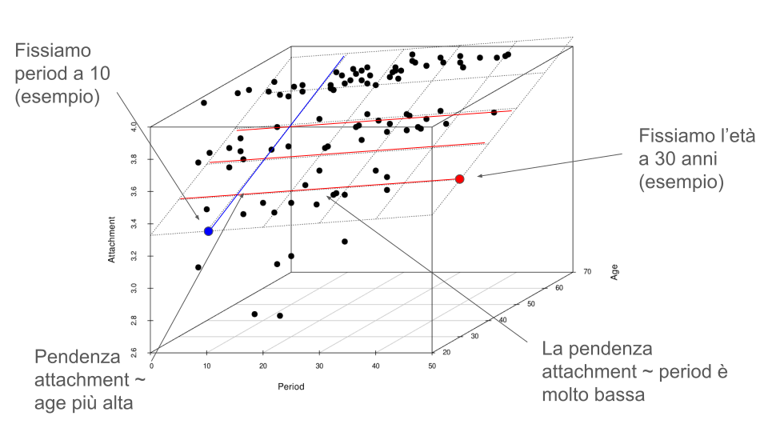
Regressione Multipla
Per darvi un’idea, ecco dei dati simulati dove l’effetto di period è zero vs diverso da zero.
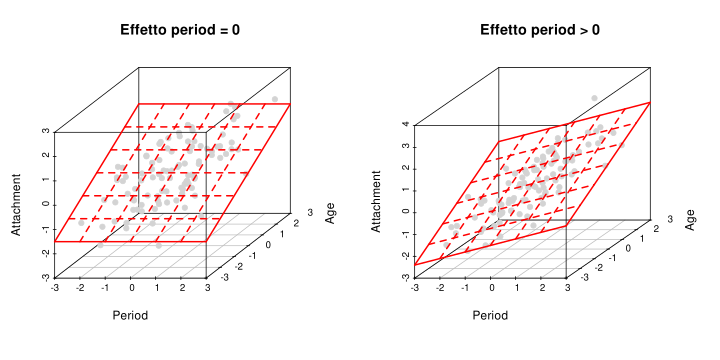
Regressione Multipla
Quello che si fa solitamente è rappresentare le singole relazioni stimate dal modello (quindi aggiustate). Le bande colorate sono gli intervalli di confidenza. Quello che viene fatto è vedere la retta stimata per un certo predittore, fissando gli altri sul valore medio.
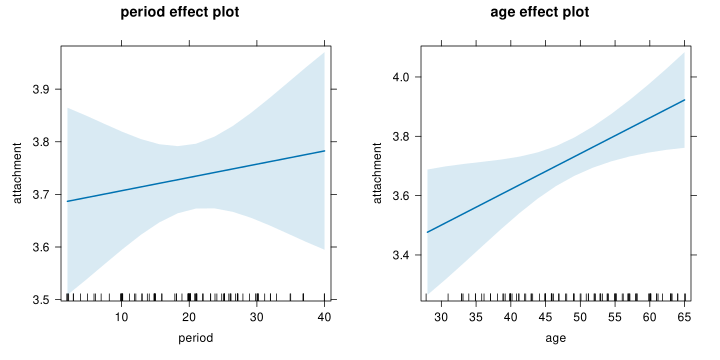
Regressione Multipla
Un’ultima intepretazione utile di cosa succede nel modello di regressione multiplo riguarda la residualizzazione. Noi vogliamo vedere la relazione attachment ~ period ripulendo per age. Quindi togliere l’effetto di age sia da attachment che da period.
Possiamo quindi fare due modelli di questo tipo:
I residui di questi due modelli saranno i valori di attachment e period togliendo l’effetto di age.
Regressione Multipla
Possiamo ora fare un terzo modello dove usiamo period (pulito da age) che predice attachment (pulito da age):
Coefficients:
Estimate Std. Error t value Pr(>|t|)
(Intercept) 0.000000000000000003518 0.030661328267777052115 0.000 1.00
r_period 0.002520844794687062632 0.004541656842091223827 0.555 0.58Il coefficiente è lo stesso di quando facciamo il modello completo attachment ~ period + age. Internamente il modello vede la relazione tra predittore e outcome, residualizzata per gli altri predittori.
Predittori categoriali con > 2 livelli
Prima di vedere una regressione multipla con predittori categoriali e numerici, vediamo cosa succede se inseriamo un predittore categoriale con più di 2 livelli. Intuitivamente:
- non è più come un semplice t-test essendo che abbiamo più di due gruppi/livelli
- non abbiamo più una singola pendenza che rappresenta l’effetto del predittore sull’outcome
- se con 2 livelli potevamo rappresentare la variabile come una serie di 0 e 1 (variabile dummy) ora ci servono più variabili dummy avendo più gruppi/categorie
Predittori categoriali con > 2 livelli
Infatti l’equazione di un modello lineare con un predittore \(x\) categoriale con \(k > 2\) livelli diventa:
\[ y_i = \beta_0 + \beta_1 D_{i1} + \beta_2 D_{i2} + \dots + \beta_{k-1}D_{i,k-1} + \varepsilon_i \]
\[ D_{ij} = \begin{cases} 1 & \text{se l'osservazione } i \text{ appartiene al livello } j, \\ 0 & \text{altrimenti.} \end{cases} \]
Quindi quando inseriamo un predittore a \(k\) livelli, si creano \(k - 1\) variabili dummy \(D\) dove 1 e 0 rappresenta l’appartenenza a quella categoria. Ma cosa vogliono dire i parametri?
Predittori categoriali con > 2 livelli
L’idea è la stessa dell’esempio con 2 gruppi. Sostanzialmente ogni parametro \(\beta\) (a parte l’intercetta che vediamo dopo) rappresenta la differenza tra due livelli (proprio come nel caso dei tre gruppi).
L’intercetta rappresenta la media del gruppo di riferimento. Di default i software prendono il primo in ordine alfabetico oppure quello che viene specificato manualmente.
Ogni parametro \(\beta\) rappresenta quindi la differenza tra il gruppo di riferimento (intercetta) e il gruppo che quella specifica variabile dummy codifica. Sono sostanzialmente \(k - 1\) t-test confrontati sempre con il gruppo di riferimento.
Predittori categoriali con > 2 livelli
Vediamo un esempio pratico, usiamo residence (area geografica di residenza) per predire l’attaccamento all’associazione di volontariato (attachment). Il punto rosso è la media.
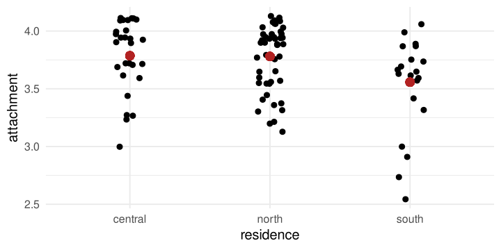
Predittori categoriali con > 2 livelli
Vediamolo ora all’interno del modello. central in ordine alfabetico è il primo livello e quindi rappresenta l’intercetta (ovviamente si può cambiare).
Call:
lm(formula = attachment ~ residence, data = dat)
Residuals:
Min 1Q Median 3Q Max
-0.8871 -0.1161 0.1129 0.2196 0.4429
Coefficients:
Estimate Std. Error t value Pr(>|t|)
(Intercept) 3.786071 0.059808 63.304 <0.0000000000000002 ***
residencenorth -0.005646 0.075551 -0.075 0.941
residencesouth -0.228929 0.091358 -2.506 0.014 *
---
Signif. codes: 0 '***' 0.001 '**' 0.01 '*' 0.05 '.' 0.1 ' ' 1
Residual standard error: 0.3165 on 93 degrees of freedom
Multiple R-squared: 0.08218, Adjusted R-squared: 0.06244
F-statistic: 4.164 on 2 and 93 DF, p-value: 0.01854
Predittori categoriali con > 2 livelli
Quindi:
(Intercept)è la media diattachmentper i soggetti di centro-italiaresidencenorthè la differenza tra nord-italia e centro-italiaresidencesouthè la differenza tra sud-italia e centro-italia
Stessa intepretazione del caso a due livelli, solo che abbiamo un contrasto in più.
Predittori categoriali con > 2 livelli
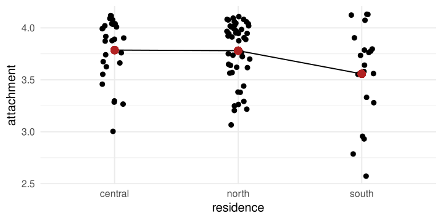
Predittori numerici e categoriali
Mettiamo le cose insieme, ora facciamo un modello dove abbiamo predittori categoriali (residence) e numerici (period) insieme. Di base stiamo modellando questo:
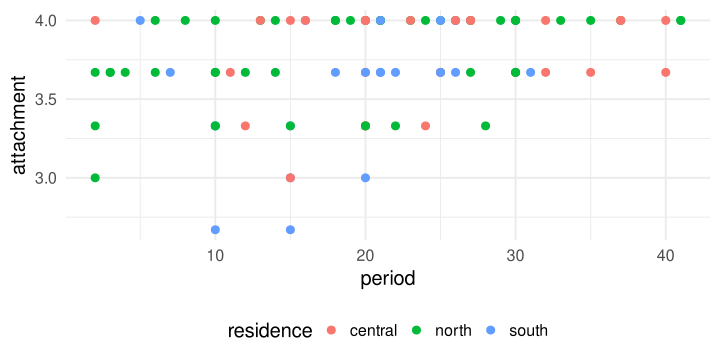
Predittori numerici e categoriali
Partiamo dal modello questa volta e poi vediamo graficamente cosa succede:
Call:
lm(formula = attachment ~ period + residence, data = dat)
Residuals:
Min 1Q Median 3Q Max
-0.84760 -0.18916 0.07101 0.20185 0.58751
Coefficients:
Estimate Std. Error t value Pr(>|t|)
(Intercept) 3.534554 0.095893 36.860 < 0.0000000000000002 ***
period 0.010511 0.003225 3.260 0.00156 **
residencenorth 0.045488 0.073612 0.618 0.53814
residencesouth -0.174621 0.088550 -1.972 0.05161 .
---
Signif. codes: 0 '***' 0.001 '**' 0.01 '*' 0.05 '.' 0.1 ' ' 1
Residual standard error: 0.3013 on 92 degrees of freedom
Multiple R-squared: 0.1772, Adjusted R-squared: 0.1504
F-statistic: 6.605 on 3 and 92 DF, p-value: 0.0004316
Predittori numerici e categoriali
Se intepretiamo i parametri come al solito, abbiamo:
(Intercept): media diattachmentquando tutto è zero. Quindi quando siamo nel gruppo di riferimento (central) e quandoperiodè zero.period: l’incremento diattachmentper un incremento unitario diperiodcontrollando perresidenceresidencenortheresidencesouthla differenza di attachment tra nord/sud vs central, controllando perperiod
Ma cosa significa controllando per con variabili categoriali e numeriche? Vediamolo graficamente concentrandosi (per semplicità) sul confronto sud vs centro.
Predittori numerici e categoriali
Abbiamo l’effetto di period (rette) per ogni gruppo e i quadrati sono le medie di period per central e south. I due gruppi hanno una certa differenza su attachment anche.
Predittori numerici e categoriali
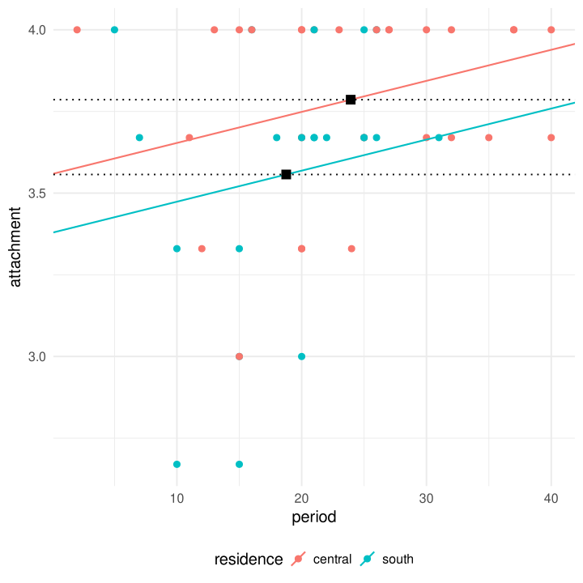
Predittori numerici e categoriali
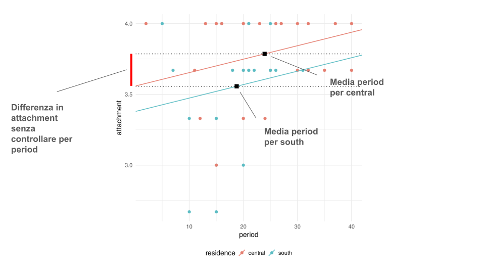
Predittori numerici e categoriali
Per controllare, come nel caso di variabile numeriche dobbiamo fissare il valore di period (ovvero la media).
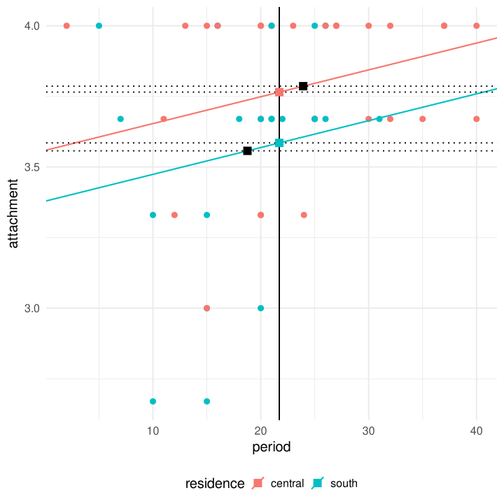
Predittori numerici e categoriali
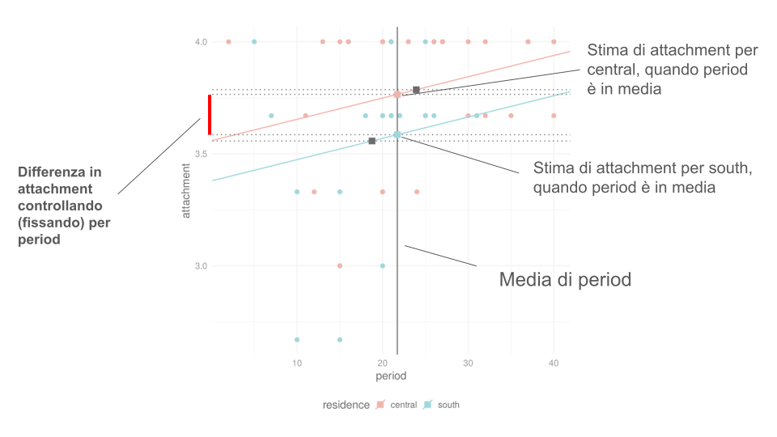
Medie aggiustate
Quelle che abbiamo calcolato e confrontato graficamente si chiamano medie aggiustate. L’aggiustamento deriva dal tenere fisso (alla media) il valore della covariata in questione (period). Una volta controllato per period le differenze tra medie possono aumentare, diminuire o rimanere simili.
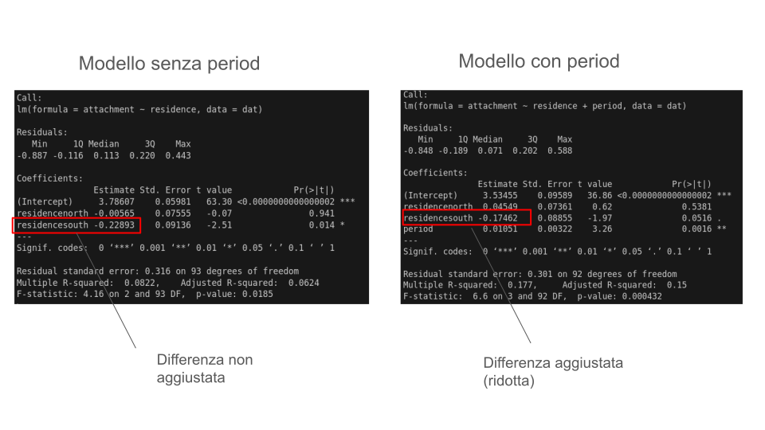
Predittori categoriali, test omnibus
L’ultima particolarità dei predittori categoriali è che essendo associati a \(k - 1\) coefficienti (\(k\) numero di livelli) il test statistico che vediamo dal modello viene fatto su ogni livello (vs l’intercetta/riferimento). Se vogliamo sapere l’effetto complessivo (omnibus) del predittore (e non delle singole dummy) si usa l’analisi della varianza. In R si può fare con car::Anova() in Jamovi è indicato il test omnibus:
Anova Table (Type II tests)
Response: attachment
Sum Sq Df F value Pr(>F)
period 0.9644 1 10.6252 0.001564 **
residence 0.7121 2 3.9231 0.023173 *
Residuals 8.3501 92
---
Signif. codes: 0 '***' 0.001 '**' 0.01 '*' 0.05 '.' 0.1 ' ' 1
Predittori categoriali, test omnibus
Vediamo un test per ogni predittore del modello, anche se residence ha \(k\) livelli. Questo test ha come ipotesi nulla \(H_0\) che tutti i confronti (nord vs sud, central vs sud, central vs north) sono zero mentre l’ipotesi alternativa è che almeno uno sia diverso da zero.
Per i predittori numerici o categoriali con \(k = 2\) livelli, questo test è ridondante rispetto al summary del modello. Per quelli con \(k > 2\) livelli ci dice complessivamente se il predittore spiega della varianza ma non ci dice quale specifico contrasto. Per quello guardiamo i coefficienti del modello.
Predittori categoriali e numerici
Il modello con period e residence si chiama tecnicamente un modello additivo ovvero i singoli predittori sono inseriti assumendo che l’effetto di uno non influenzi l’altro (se non in termini di controllare per).
Tuttavia ci si potrebbe chiedere se l’effetto di period possa variare tra una zona geografica e l’altra.
In termini grafici, se la retta di attachment ~ period possa essere diversa tra una zona e l’altra. Questo è un esempio di interazione
Predittori categoriali e numerici
L’interazione è un concetto importante ma complesso. Tecnicamente c’è interazione quando l’effetto di un predittore (sull’outcome) cambia in funzione di un’altro predittore.
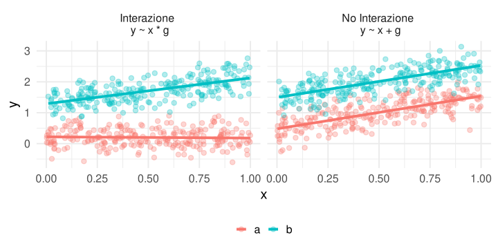
Predittori categoriali e numerici
In questo esempio l’effetto di \(x\) cambia nel momento in cui lo stimo per il gruppo “a” rispetto al gruppo “b”.
Nel modello additivo, non serve stimare la relazione y ~ x per ogni gruppo perchè assumiamo che sia la stessa. Infatti le rette sono parallele, basta stimarlo solo una volta.
Formalmente (poi vediamo nei dati) dove \(g\) è la variabile categoriale gruppo (“a” e “b”):
\[ y_i = \beta_0 + \beta_1 x_i + \beta_2 g_i + \epsilon_i \]
\[ g_{i} = \begin{cases} 1 & \text{se l'osservazione } i \text{ appartiene al gruppo a }\\ 0 & \text{altrimenti. (gruppo b)} \end{cases} \]
Predittori categoriali e numerici
Predittori categoriali e numerici
Nel caso dell’interazione invece, dobbiamo stimare due pendenze, una per gruppo. Quindi abbiamo un parametro aggiuntivo rispetto al modello additivo. Formalmente:
\[ y_i = \beta_0 + \beta_1 x_i + \beta_2 g_i + \beta_3 x_i g_i + \epsilon_i \]
Tecnicamente \(\beta_3\) (il parametro di interazione) è la differenza tra le pendenze dei due gruppi.
Il parametro di interazione è \(\beta_3\). l’interazione non è un modello adittivo perchè i due predittori si moltiplicano tra loro. Infatti si dice che è un modello moltiplicativo (o semplicemente con interazioni).
Interazione in pratica
Vediamola con i dati veri. Stimiamo il modello con interazione di attachment ~ period * age. Da notare che si usa il simbolo * (moltiplicazione) rispetto a quello + additivo. Anche qui, per semplicità omettiamo.
Call:
lm(formula = attachment ~ period * residence, data = dat, subset = residence !=
"north")
Residuals:
Min 1Q Median 3Q Max
-0.81364 -0.15364 0.06913 0.23048 0.71174
Coefficients:
Estimate Std. Error t value Pr(>|t|)
(Intercept) 3.650828 0.177978 20.513 <0.0000000000000002 ***
period 0.005652 0.006932 0.815 0.419
residencesouth -0.460256 0.285128 -1.614 0.113
period:residencesouth 0.013886 0.013162 1.055 0.297
---
Signif. codes: 0 '***' 0.001 '**' 0.01 '*' 0.05 '.' 0.1 ' ' 1
Residual standard error: 0.3415 on 45 degrees of freedom
Multiple R-squared: 0.1683, Adjusted R-squared: 0.1128
F-statistic: 3.035 on 3 and 45 DF, p-value: 0.03874
Interazione in pratica
Vediamola graficamente e poi interpretiamo i parametri. Graficamente sembra esserci evidenza di interazione: la pendenza per south è maggiore rispetto a quella per central. Quindi (graficamente) l’effetto di period è più forte per le persone residenti al sud rispetto a quelle del centro.
Interazione in pratica
Ora vediamo i parametri. C’è una differenzia sostanziale rispetto al modello additivo, l’effetto di un predittore viene condizionato all’altro. Nel modello additivo questo non è rilevante perchè si assume che non ci sia interazione. Metto tra [] l’aggiunta interpretativa.
(Intercept): attachment medio quando tutto è zero. In questo caso quando period è zero e residence è central (livello di riferimento) [solita interpretazione]period: incremento di attachment per incremento unitario di period [quando residence è zero, quindi per le persone di centro]. In altri termini è la pendenzaattachment ~ periodper le persone di centroresidencesouth: differenza in attachment tra centro e sud [quando period è zero]. Quindi è la differenza tra i due gruppi fissando il valore di period a zero.period:residencesouth: [questo è il parametro di interazione e rappresenta la differenza tra la pendenza per le persone del sud e le persone di centro]. Se le due pendenze sono diverse (non parallele) questo parametro sarà diverso da zero.
Quindi la differenza principale è che ogni effetto è condizionato a quando l’altro è zero. Nel caso additivo questo non fa differenza mentre qui cambia l’interpretazione dei parametri essendo che stiamo stimando due pendenze e non più solo una.
Interazione in pratica
Interazione in pratica
Bibliografia
Di Marco, G., Hichy, Z., & Sciacca, F. (2020). Dataset on the relationship between psychosocial resources of volunteers and their quality of life. Data in Brief, 30, 105522. https://doi.org/10.1016/j.dib.2020.105522